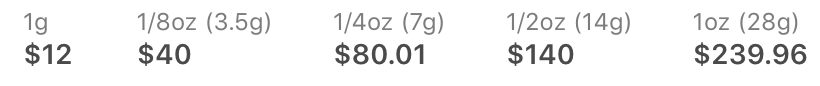
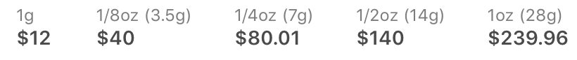
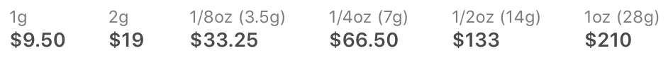
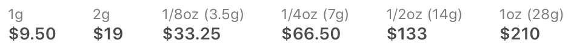

Aurora Indica, bred by Nirvana Seeds, is a 90% indica cross between Afghan and Northern Lights. Fulfilling our expectations of an indica, this strain induces heavy full-body effects and a sedating cerebral calm. Aurora Indica is a potent strain for evening treatment of insomnia, pain, and other conditions requiring a restful night’s sleep. The short plants produce dense, bulky buds dusted in a thick layer of crystal resin. Different phenotypes emerge under different growing conditions, giving way to variable bud structures and aromas ranging from fruity to floral. Nirvana Seeds recommends a 9 to 11-week flowering time for indoor gardens, or a mid-September harvest for outdoor growers.
 

 
